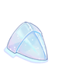

Wiki Editing 101

So you wanna share what you know about NovaRO with everybody and write a guide in the Wiki. Or you noticed something in NovaRO Wiki is wrong but it seems there’s no one around to correct it, but you’re not really sure where or how to start!
Not to worry, here we will learn how to get started as a NovaRO Wiki contributor and editor. We will get ourselves familiar with some of the essential tools every contributor needs.
If you have more questions about editing the Wiki, formatting a page, creating new pages and guides, or if you just wanna hang out with fellow NovaRO Wiki contributors, drop by NovaRO's Discord server and click the #wiki channel.
Creating an Account
You need to create an account and be logged in to create and edit pages in NovaRO Wiki. Click the "Create account" link on the top right corner to begin. If you've created one, you can click "Log in".
After you're logged in, you will be grouped in the (all) and (Users) group. By default, all users are able to view pages and edit normal (unprotected) pages.
Creating and Editing a Page
Creating a New Page
Now that you have a NovaRO Wiki account and have logged in, you can start creating and editing pages. You can simply type the title of the page you want to create on the Search box on the top right hand side, then click the red link that appears.

Every changes made and saved can be viewed by clicking the View history tab on the top right hand side of any page. You can also rename a page by hovering your cursor over the More tab and clicking the Move link.
Editing an Existing Page
To edit a page click on the "Edit" tab: Clicking this tab will bring you to a different page, as seen below.

To check what you've changed so far during an edit, you can click the "Show preview" button. This will keep the edit window open at the bottom of the page while having what the page will look like after your edit above. This does not save the work, it is only a preview, you still need to click "Save changes" to actually change the page.
Basic Editing Tips and Information
The editing box is where you write the content of the page and format the page. If you have never edited a Wiki page from the source before, here are some useful links for you:
- Basic formatting: Includes how to create headers/separating sections in an article, text indentations, HTML-style tags, and inserting symbols.
- How to add links
- How to add bullet point list or numbered list
- To add an image to a page, first you must upload an image file to NovaRO Wiki by clicking the Upload file link on the left side bar, or use the keyboard shortcut Alt + Shift + U
- How to format and display image files
- How to create and edit tables manually
- A tool to quickly create tables and generate the relevant codes
- How to use templates
The Summary box beneath the editing box allows you to provide a short explanation about what changes you've made to the page. You don't always have to fill this, but it's nice to say what you changed, especially on public pages so that others know what has been changed.
After making any changes to the page, you will have to click the Save page button to save the changes you've made. You may be prompted to answer a simple question related to Ragnarok Online before you can save the page.
You can see a history of the changes made to this page by clicking Show changes button.
Class Guides
Information when writing guides should be based on information you know or have experienced first hand. Try to stay away from theory crafting builds together.
Writing and Editing General Class Guides
Guidelines
If you want to help edit and keep the General class guides up to date and with the correct information there's some basic information that you should keep in mind.
- General class guides are meant to contain the basic information for that class.
- They should have a description of what stats are important to the class and why.
- There is a pre-made table on each class page for describing the general stats of the class. Stats for specific builds should go in their own category.
- What skills or builds are the current meta for that class.
- Each build should have a description of what the goal of the build is. (Damage Per Second, Tanking, Support, Farming, Single Target, Area of Effect... etc).
- We have a Skill List template to display the basic information of each skill on these class pages, if you want to add more information or add tips and tricks about a specific skill do it in the build itself not in this list. This list should only contain the basic information of what the skill does, keep in mind it may also be shared on other pages, so editing the list could affect multiple different areas not just your own.
- When you want to link skills for reference, there is a list of all the player skills here with their template already written out for you.
- A quick rundown of Early, Mid, and Endgame gears for each build.
- A rundown of class specific mechanics. (example; Guillotine Cross's Poisons, Genetic's Homunculus, Sorcerer's Elementals and point system, basically anything unique to your class).
- General class guides should have as little opinion in it as possible, to keep from misinformation or edit wars from happening.
- Staying away from things such as; "This is the best weapon", "This is the best card" or things that are based off of opinion.
- If you want to say something is the best in a specific situation or under certain circumstances you can format it something like this; "This is the best card if you want more Max HP in this slot" or "This is the best armor for After Cast Delay that we can wear". Basically be specific when explaining why it is the best for that build.
- General class guides should be written in a style that is easy to understand, this helps players that are new to the game or players that are not native english speakers. (which is pretty common).
- These guides should be clean and concise, this one of the first pages new players are going to look at for their class, and we want to give a good impression.
Writing and Creating a Personal Class Guide
If you want to create your own guide here's what you should keep in mind when writing it.
- It should have a title that clearly shows the class, and author's name. You can also state if the guide is for PvM or PvP content. (examples; "illegal's PvM Guillotine Cross Guide", "How to Genetic? by AloeLeaflet").
- The class name should be fully written out here, do not abbreviate it.
- A general overview of the class, why you play it, what the pros and cons of the class of the class are, etc.
- Description of each of the stats and why they are important to the class.
- Here is a pre-made table that you can use Stat Template (Copy the chart over, do not edit the page).
- A list and explanation of the classes important Skills.
- You can copy over the Skill List pages for your class, and add your input on each of them. (Once again, don't edit these pages directly, copy them over). (You can find these pages by typing "Template:Thief" in the search bar, obviously replace "Thief" with the class you are looking for).
- At least one Build with Stats and Skill build recommendations, including gameplay strategies.
- A detailed list of Equipment options, which not only includes end-game equipment, but also mid-game (and early-game if applicable) specific to the build.
- An explanation of any class or build-specific mechanic, such as Spell Books for Warlocks, Runes for Rune Knight, or Songs for Maestros/Wanderers, if applicable.
- A detailed leveling guide which includes specific leveling spots as well as strategies.
- There is no definite deadline or time limit for a writer to complete their guide.
- You should take the time to do in-depth research on the class you are writing for; before, during, and after you completed writing most of your guide. This is one of the most time-consuming activities that class guide writers do, but it ensures accuracy of the guides information.
- NovaRO is an actively developing server, and it is very important to stay up to date with bug reports and fixes related to your class, and implementation of new gears that may be relevant and useful to it.
- NovaRO Wiki can be viewed and read by anyone. This includes people who are new to Ragnarok Online, to Renewal, and to NovaRO.
- The first things readers see when they read your guide are the NovaRO logo, and your name. In a way, writing a class guide makes you an ambassador or representative of NovaRO to new players. Be sure to make a good impression!
- When writing your guide, do your best to write in a style that is easy for readers to understand. Your reader may be new to the game, and chances are they're not a native English speaker.
- This is a template you can use to start making a guide, it has some basic information already on it to help you get started. Class Guide Template
Do's and Don'ts of Guide Writing
- Re-read your guide! You should re-read everything you've written to make sure you aren't leaving typo's everywhere.
- You can copy parts of your guide and paste it onto Google Translate, then click the "Listen" button on the bottom left hand side to check for typos, awkward sentences, sentences that are too long, and so on.
- Be sure that stats, skill names, item names, monster names, locations, are properly capitalized.
- Avoid using abbreviations unless it’s necessary. If an item or skill name is too long, you may shorten it (e.g. Pendant of Maelstrom into PoM) but you have to at least write its full name once in every section you mention it.
- Remember that the people who will read your guide may be new to Ragnarok Online or Renewal or NovaRO, and most likely are not native English speakers.
- After you write your guide, read the whole thing and ask yourself “Can an 11 year old kid understand this? Would someone new to the game or to Renewal or to NovaRO understand what I’m trying to say in this guide?”
- If the answer to those questions are both yes, your guide is pretty much good to go.
- Do not recommend equipment that cannot be obtained by normal means in NovaRO. God Items such as Brynhildr for example are not obtainable in NovaRO.
- Gramps is a great place to level but you have to provide alternative leveling methods.
- Not every player is willing and able to invest the exact same amount of time and effort in the game.
- There are solo players and players that came to the server with a group of friends. Players that can spend hours playing non-stop, and players that can only spend an hour or two per day, or less.
Players that can donate regularly and players that have to farm every day to afford basic equipment. Veteran players and newbies to Ragnarok Online. You must think of these different kinds of players when you write, especially when writing the equipment and leveling section.
- You have to create a good synergy among skills and stat build section, equipment recommendation section, and leveling section. These three points are the most vital aspects that a player must understand to play a class properly.
- You probably have felt lost and frustrated because you are under-geared for a leveling spot recommended by others, and unable to get the funds needed to get better gears because you are under-leveled. A good guide should help players understand how to gear up, how to level up, and how to play their class.
Plagiarism
Copying someone else’s work and passing it off as yours is called plagiarism, and it is cheating.
This is a huge disrespect toward writers that worked hard and did the research to write their guide. Everyone can view your guide, and anyone can and will figure out if you did it. We will blacklist cheating writers, and you will not receive any reward if you are copying another guide. This includes (but not limited to):
- Copying from other guides in NovaRO Wiki.
- Copying from other guides in iRO Wiki.
- Copying from other Wiki or guides elsewhere on the Internet that is written in other languages besides English.
If you do not write it yourself, if you translated it, and especially if you don’t put a source, you are plagiarizing.
Common Wiki Templates
NovaRO Wiki Specific Templates
If you have not already viewed Wikipedia's help page on templates, you should do at least a brief reading of the basics.
The NovaRO Wiki has several custom templates which can be used to enhance articles. The most popular templates that you should familiarize yourself with are:
Item Display Templates
- "Item List2" is generally the best to use, only time we really use "Item List" is when an item is not yet linked on the NovaRO Market.
- To get the item id, search for the item on the NovaRO Market, or use @iteminfo ingame.
{{Item List2|id=909|item=Jellopy}}- Will display as Jellopy and provide a link to the item's NovaRO Market page.
Jellopy and provide a link to the item's NovaRO Market page.{{Item List|id=909|item=Jellopy}}- Will display as Jellopy and provide a link to the item's Divine-Pride item page.
Jellopy and provide a link to the item's Divine-Pride item page.
Card Display Templates
- Getting the card id is the same as getting the item id's.
{{Card |id=4006 Lunatic Card}}- Will display as Lunatic Card, with a link to the item's Divine-Pride page.
Lunatic Card, with a link to the item's Divine-Pride page.
Skill Display Templates
You can look here for any player skills, they are organized by class.
Item Illustration Template
{{Illust|id=909}}- Will generate a 75x100 item artwork of Jellopy. 
Basic Wiki Tips and Templates
Writing styles
'''Bold Text'''- Will display as Bold Text.''Italic Text''- Will display as Italic Text.<span style="color:#900">Colored Text</span>- Will display as Colored Text. You can change the hex number for different colors.
Table of Contents
<div style="float:left;">__TOC__</div>- Will display a Table of Contents on the left side of your screen.== Heading level 2 ==Will display as the main heading of a section.=== Heading level 3 ===Will display as a subsection of heading 2.== Heading level 2 ==Adding a "heading 2" below "heading 3" will start another section in the page.
- ! While there is a
= Heading level 1 =it should not be used, the reason is because mediawiki translates it to a<h1>tag and creating a bunch of them in the same page is considered bad practice for HTML structuring.
- An example of how to lay these out;
== Guillotine Cross Builds ===== Rolling Cutter Build ======= Stats ======== Gears ====- Back to Heading level 2 for a new build, so that it's all labeled in it's own section.
=== Cross Impact Build ======= Stats ======== Gears ====- If you want the
=== Heading level 3 ===and beyond to have the horizontal rule you can use----in the next line right after it.
Tables
- All tables on the wiki should be 95-90% in width and centered to protect the consistency of pages. For the sake of consistency, start new tables with
{| class="mw-collapsible wikitable" style="text-align: center; margin:auto; width: 95%"
- Tables should be collapsible, but not collapsed by default, as this allows for a quick search of information on the page whether by quickly scrolling through or using the search function in one's browser.
- The exception for this rule is information/images that would otherwise be too large for normal displays and would break the page. These should be collapsed by default.
- You can make a table collapsed by default by changing
class="mw-collapsible wikitable"toclass="mw-collapsed wikitable"
- The following is an example and explanation of what each part of the table is for;
- This line set's up your table.
{| class="mw-collapsible wikitable" style="text-align: center; margin:auto; width: 95%"
- Each of these four lines adds another column to your table, they also control the width of each column.
- If you want more or less lines, simple add or remove these as you please.
- Background color refers to the heading color of the table.
- Color refers to the color of the text in the heading of the table.
! style="background-color:Purple; color:White; width: 15% " | Item
! style="background-color:Purple; color:White; width: 8% " | Slot
! style="background-color:Purple; color:White; width: 14% " | Way to Obtain
! style="background-color:Purple; color:White; width: 58% " | Notes
- This ends your current row, after this everything will be added to the next row below it. If you forget this your table will break, it's very noticable.
|-
- Adds a description for the "Item, Slot, Way to Obtain, and Notes" column respectively.
|Bow
|Weapon
|Mobs
|This is a weapon archer's use
- Once again, ends your current row, letting you now add to the next one.
|-
- This ends your table, this will also break your table if it missing at the very end.
|}
- All of these together will look like this;
| Item | Slot | Way to Obtain | Notes |
|---|---|---|---|
| Bow | Weapon | Mobs | This is a weapon archer's use |